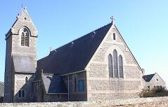

Le Ménage ès Feuvres
St. Ouën
Lé 19 dé juilet, 1980

Moussieu l'Rédacteu,
J'ai ieu la chance dans chutte vie. Lé onze d'octobre mil huit chent nénante-tch'ieune j'fus bâptîsi dans l'églyise dé St. Georges, pas bein liain d'ichîn, par lé Révérend John Pépîn, Recteu d'St. Ouën, et ch't' arlévée, appréchant d'huiptanteneuv' ans pus tard, j'ai rieu l'pliâsi d'aller vaie l'églyise flieuthie pour la célébrâtion du chent'naithe dé s'n ouvèrtuthe pour "L'Administration des Sacrements et des autres cérémonies et coutumes de L'Église selon l'usage de l'Église d'Angleterre", comme nous l'dit la Litourgie.
Il a paîssé tout pliein dg'ieau par La Corbiéthe dépis chu temps-là, et quâsi touos les cheins tch'étaient à l'Êcole du dînmanche en même temps qu'mé sont au r'pos êtèrnel. J'crai tch'i' n'y'en a qu'iun vivant, lé Sieur Joseph Le Floch, tchi s'en fut à La Côte pour les Robîns en 1907. Il avait nénante ans l'treize dé juîn pâssé, et i' d'meuthe à Montréal au Cannada. Chose assez r'mèrtchabl'ye, j'ai rencontré des Cannadgiens d'souche Jèrriaise à St. Georges ch't' arlévée tch'i' l'connaîssent, lé Sieur Le Floch, et si janmais y'a ieu preuve qué chein qu'nou-s-apprend à l'Êcole du Dînmanche, et qu'l'habitude d'aller au tchulte engendre dans les p'tits jours d'un îndividu a eune bouanne înfluence pour lé reste d'eune vie, lé Sieur Le Floch en est ieune. A nénante ans i' va acouo à l'églyse touos les Dînmanches, et il a eune bouanne vouaix et chante la s'gonde dans l'tchoeu.
D'être dans l'églyise dé St. Georges aniet mé ramémouaithe un tas d'choses. J'm'èrsouveins des long sèrmons d'Moussieu Pépîn et Moussieu Barascud, Prêtre Suisse-Français. Étant mousses, j'avions d'la peine à rester trantchil'yes et à nouos garder rêvil'yis dans nouos bancs. Nou 'tait là dépis dgiex heuthes jusqu'à la fîn du sèrvice auprès méjeu et i' fallait à toute forche sé condithe comme i' faut duthant les sèrvices, car si les pathents v'naient à ouï qu'nous-avait 'té mêchants dans l'églyise i' vouos donnaient eune ronde. J'tions contents quand ch'tait Moussieu Paul Bichery tchi prêchait. Ses sèrmons n'étaient janmais longs. Un charmant moussieu, lé Révérend Bichery. Il allait partout à pid et quand i' v'nait à St. Georges i' dînait siez la Tante Vîne (Mdme. Ph'lippe Hamon à Portînfer.)
Dans l'Êcole du Dînmanche i' fallait c'menchi par apprendre la Collecte du jour. À m'suthe qué nou montait d'clâsse en clâsse, i' fallait apprendre à dithe lé Caticème, lé Sŷmbole des Apôtres, les Êpitres et Êvangiles et les Dgiex Commandements par tchoeu, et i' fallait aller deux ans dans la septième clâsse et n'aver pon mantchi un Dînmanche ni pèrdu eune mèrque pour gângni la Grand' Bibl'ye. Ch'tait l'couronnement des sept ou huit pâssées dans l'Êcole du Dînmanche.
Ch'tait tout en Français dans chu temps-là. Lé chant 'tait mangnifique, et j'm'èrsouveins acouo d'cèrtains cantiques tch'étaient les favoris. Iun 'tait "Soleil de Justice"; d'aut' étaient "Nous aimons le Saint Lieu" et "Tout mon coeur s'enflamme."
Quand la congrégâtion r'citait les priéthe souotre l'Minnistre, y'avait eune pèrsonne - ch'tait Missis Bartlett - tch'était tréjous un mot driéthe tout l'monde, et nou ouiyait tréjous s'n "Amen" tout seu auprès touos l's aut' Âmens.
Eune fanmille tch'était dévouée à l'églyise et tchi pathaît êt' oubliée dans l's êloges d'au jour d'aniet 'tait la fanmille Hâcou d'L'Êta. I' m'sembl'ye qué j'vai acouo Moussieu François Philippe Hâcou (pus tard Connêtabl'ye de la pâraisse) et sa charmante danme assis dans lus banc auve lus deux filles, les D'mouaîselles Emma et Marie, Dînmanche auprès Dînmanche. I' n'mantchaient janmais, et nou peut dithe tch'il' 'taient les vrais pilyèrs dé l'églyise. Et Mait' Elie Maugi, Surîntendant d'l'Êcole du Dînmanche et Maître dé la clâsse des grands garçons, en 'tait un autre.
Lé Recteu et ses officièrs et les danmes dé la congrégâtion d'St. Georges ont travailli dû pour décorer l'églyise et organiser l'exhibition d'objets d'dotchûments entouorre l'églyise. I' mêthitent d'êt' félicités.
Les sèrvices et festivités pour rendre grâces au Bouân Dgieu pour lé chent'naithe, auve Moussieu l'Douoyen et l'Révérend Binder à prêchi, et l'attendance dé S'n Excellence lé Lieutenant Gouverneux, ont remplyi l'églyise. Ch'tait mangnifique dé vaie tant d'monde rêunis ensembl'ye pour prier et chanter les louanges du Seigneur. V'là tchi m'fait envie d'vaie eune congrégâtion d'même à l'églyise touos les Dînmanches. Mais hélas! Ches jours nou peut pûtôt s'attendre à vaie l's aubèrges plieines et l's églyises quâsi viédes!
George d'La Forge
Viyiz étout: